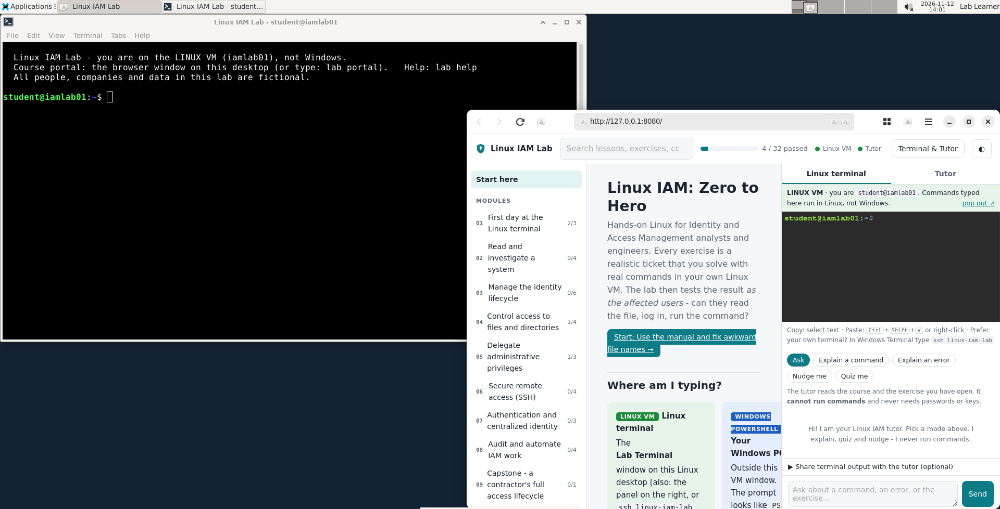
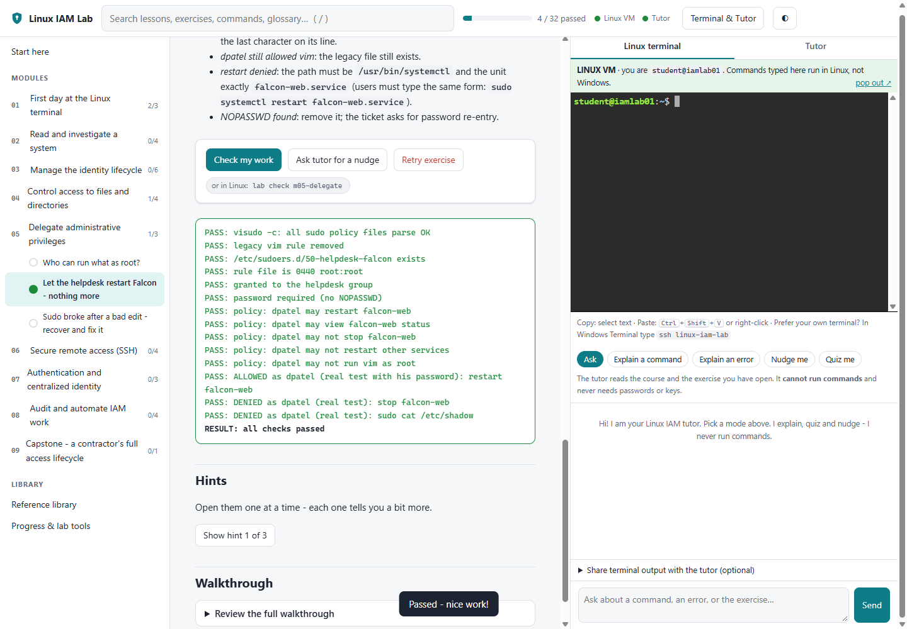
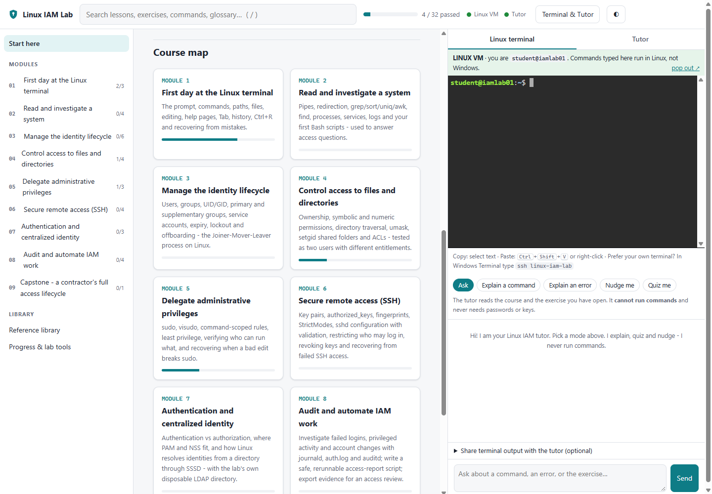

What this lab is
Most identity work ends on a server. Someone has to create the account, put it in the right groups, make sure it can read the finance share and nothing else, give the helpdesk the one command they need as root, install a contractor's SSH key, and, on the last day, make sure every one of those doors is shut. On Linux all of that lives in files and commands you can read, which makes it the best place to learn how access really works.
This lab gives you your own Ubuntu Server in a VirtualBox window, a fictional company with its own users, groups and LDAP directory, and 35 realistic tickets. You type real commands in a real Linux terminal. When you press Check my work, the lab tests the result as the affected people: can Jae read the file, can Dev restart the service but not stop it, is the stolen key refused? A local AI tutor explains commands and errors, and never does the work for you. Nothing leaves your computer.
Syllabus
-
First day at the Linux terminal
The prompt, commands and flags, paths, files, nano, man pages, Tab, history and Ctrl+R, and how to get out of trouble.
You keep: the confidence to work on any server you are given.
-
Read and investigate a system
Pipes, grep, sort and awk on auth logs, find risky files, inspect services, write your first Bash script.
You keep: answers to "who failed to log in, from where, and who got in".
-
Manage the identity lifecycle
UIDs and GIDs, primary and supplementary groups, service accounts, expiry, lockout, and a full joiner, mover and leaver.
You keep: an offboarding procedure that also stops SSH keys and cron jobs.
-
Control access to files and directories
Ownership, chmod in numbers and letters, directory traversal, umask, setgid team folders and ACLs.
You keep: access tested as two users, one allowed and one denied.
-
Delegate administrative privileges
Review who can run what as root, write a command-scoped sudo rule with visudo, and recover when a bad edit breaks sudo.
You keep: a least-privilege sudo rule and the proof it cannot be abused.
-
Secure remote access
SSH keys and fingerprints, StrictModes, a hardened sshd validated before reload, and revoking a stolen laptop's key.
You keep: a revoked key that is refused even when someone adds it back.
-
Authentication and centralized identity
Authentication versus authorization, PAM and NSS, SSSD reading people from the lab's own LDAP directory, building entries with ldapadd, and a group's whole lifecycle from create to delete (the same job as FreeIPA or AD).
You keep: a fix made in the directory, not as an exception on one server.
-
Audit and automate IAM work
journalctl and auth.log, auditd watches on identity files, a rerunnable access-report script, checksummed evidence, and a Nagios-style health check for the identity services.
You keep: an access-review evidence package an auditor would accept.
-
Capstone: a contractor's whole lifecycle
Onboard Jordan with exactly the approved access, fix a login that breaks in a different way for every learner, revoke everything at contract end.
You keep: a test report showing what was allowed and what was denied.
What it looks like



Why it helps you get hired
Identity jobs increasingly ask for "Linux experience", and interviewers check it with the same few scenarios. They don't want definitions; they want to hear what you did and how you proved it. Every card below is a question you will be able to answer from your own lab. Click a card to see where you practise it.
Roles this prepares you for: IAM analyst, IAM engineer, access management analyst, identity administrator, Linux administrator with access duties, junior security engineer.
How to install it
One PowerShell command on your Windows PC. No administrator rights, no Windows features to switch on, and your other virtual machines are never touched.
- Windows 10 (1809 or newer) or Windows 11, Home edition is fine.
- Oracle VirtualBox 7 already installed.
- About 5 GB of free memory while the lab runs, and 25 GB of free disk.
- Internet for the first install only (about 3.5 GB of downloads, every file checked against its published checksum).
PS>
powershell -NoProfile -ExecutionPolicy Bypass -File .\Install-LinuxIAMLab.ps1
The installer builds a dedicated Ubuntu Server 24.04 LTS virtual machine, sets up the course, the lab's own directory and the AI tutor inside it, saves a known-good snapshot, and puts three shortcuts on your desktop: Start, Stop and Reset Linux IAM Lab.
student@iamlab01:~$
lab check m04-permissionsPASS: ALLOWED as jkim (finance): read
PASS: DENIED as btran (not finance): read
RESULT: all checks passed
Broke something while practising? Retry exercise resets one ticket; Reset Linux IAM Lab saves your work and brings the whole server back to a clean start.
Read the full lab manual: every step from an empty PC to the capstone, with real screenshots and real output from a running lab.
Homework after the capstone
The lab is only half the job. The other half is making sure the right people can see it. Tick these off as you go; this page remembers them on your device.
Homework complete. Go apply.
Questions or access? Ask the author